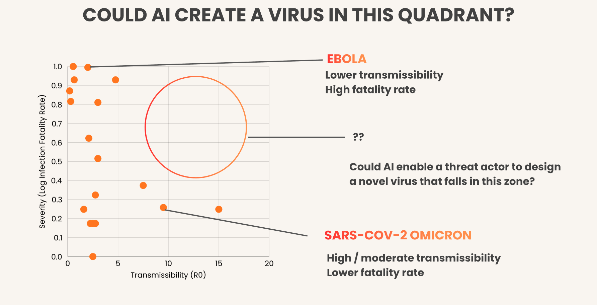
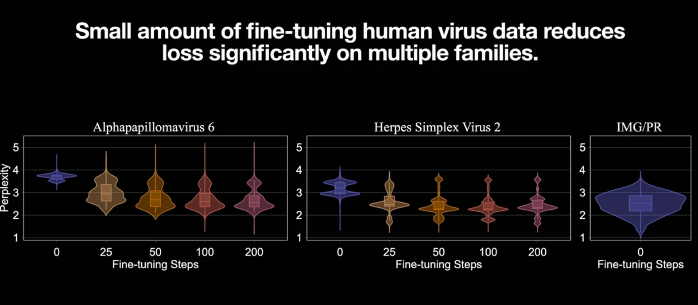
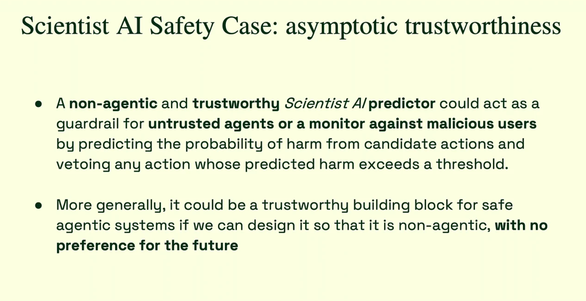
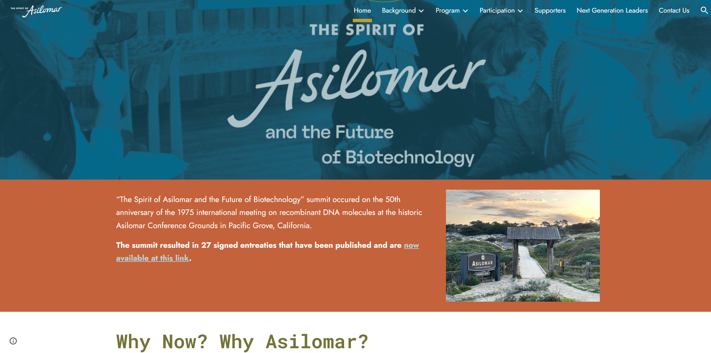
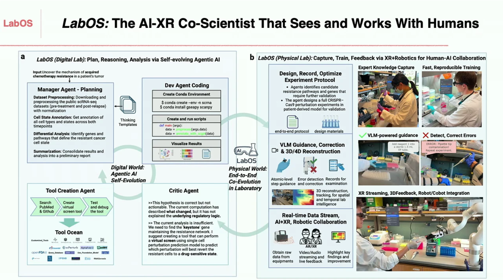

The atmosphere at NeurIPS 2025 felt different. For years, the intersection of AI and Biology was a purely optimistic frontier—a race to fold every protein and map every cell to cure disease. But this year, the conversation shifted. As we move from tools that analyze biology to agents that can engineer it, we are no longer just reading the book of life; we are picking up the pen.
The "Biosecurity Safeguards" workshop was a reckoning. It highlighted a growing consensus that our current safety paradigms are insufficient for the era of Generative Biology. The discussions were not just about code, but about responsibility, history, and the survival of our species.
Here is a look at the emerging philosophy of AI Biosecurity, exploring how we navigate the thin line between a cure and a catastrophe.
1. Visualizing the Unseen Risk: The "Empty Quadrant"
To understand what is at stake, we need a map of the biological danger zone. Megan Blewett (Iris Medicine) provided the most compelling conceptual framework of the workshop: the "Empty Quadrant."
In the natural world, viruses usually face an evolutionary trade-off. A virus that kills its host too quickly (like Ebola) struggles to spread widely. A virus that spreads easily (like Measles) is usually less lethal. Nature has not populated the top-right corner of this graph—high lethality and high transmissibility—because it is evolutionarily disadvantageous.
The core fear discussed at NeurIPS is that Generative AI breaks this evolutionary tradeoff. An AI optimized for specific biological constraints does not care about evolutionary history; it optimizes for the function it is given. Without robust guardrails, AI could theoretically guide human actors into this "Empty Quadrant," stabilizing pathogens that nature would otherwise discard.

2. The Illusion of Safety: Why "Unlearning" Fails
If the risk is clear, why aren't our current defenses working? The prevailing strategy has been "Safety Alignment"—training models to refuse harmful requests. However, research presented by Peter Henderson and the GeneBreaker team shattered this illusion.
They identified a "Bubble of Risk." Current safety evaluations are static—they test the model as it exists on the server. But in the real world, models are adapted and fine-tuned by users. Henderson showed that "unlearning" is fragile; dangerous capabilities can be recovered from a "safe" model with just a handful of data points. Even worse, larger models are often more vulnerable to these jailbreaks because their deeper understanding of biology allows them to generalize harm more effectively.

3. A New Paradigm: The "Scientist AI"
If we can't trust the model's weights to hold safety information, we need to rethink the architecture itself. Yoshua Bengio proposed a philosophical restructuring of how we build these systems, termed "Scientist AI."
The problem, Bengio argues, is Agency. Most modern AI agents are trained to achieve goals. If an agent's goal is to "maximize biological activity," it might inadvertently create a toxin to achieve that score.
Bengio proposes decoupling Epistemic Understanding (knowing how the world works) from Agency (acting on the world). A "Scientist AI" functions as a Probabilistic Oracle—a neutral observer that understands the causal laws of biology but has no desire to change the state of the world. It serves as a monitor, calculating the probability of harm for a proposed experiment and possessing "veto power," but never initiating the dangerous action itself.

4. The "Spirit of Asilomar": Governing the Ungovernable
Perhaps the most resonant theme of the workshop was historical. Russ Altman (Stanford) invoked the "Spirit of Asilomar," referencing the famous 1975 conference where biologists voluntarily paused DNA research to establish safety guidelines.
Altman argues we are at a "New Asilomar" moment. Since no single technical fix is perfect, he proposed a framework of "Compounding Mitigations." We must stack imperfect layers—human ethics reviews, automated red-teaming, and technical filters—to create a "Swiss Cheese Model" of defense where the holes do not align.

5. Towards 2026: The Loop of Physical Intelligence
Looking ahead, the future of discovery lies in closing the loop between the digital and physical worlds. The vision for 2026 is the convergence of Digital Organisms, AI Scientists, and Physical Intelligence.
We are seeing the rise of autonomous agents capable of formulating hypotheses and writing code—integrated directly with robotic wet labs, as showcased by Le Cong's LabOS. These agents will not just output data; they will drive robots to pipette fluids, culture cells, and run experiments to validate their own predictions. This creates a self-improving loop where the Virtual Cell simulates a result, the AI Scientist plans the test, and the Physical Intelligence executes it.

The Verdict
The lesson from NeurIPS 2025 is clear: As we hand over the keys of discovery to autonomous agents, our role shifts from "operator" to "architect." We must build the guardrails, the maps, and the ethical compass into the system itself.
Comments